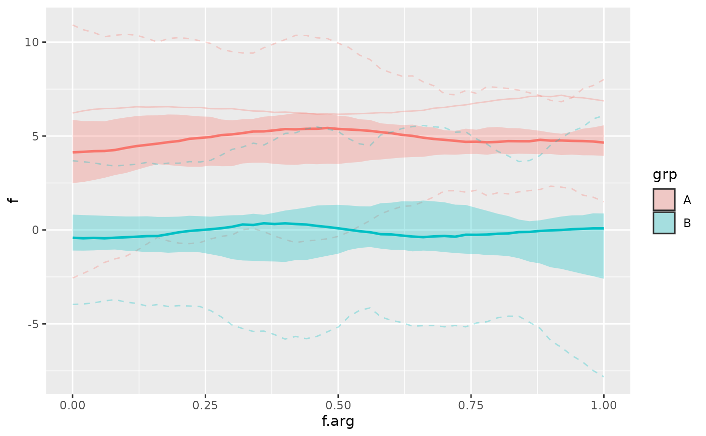
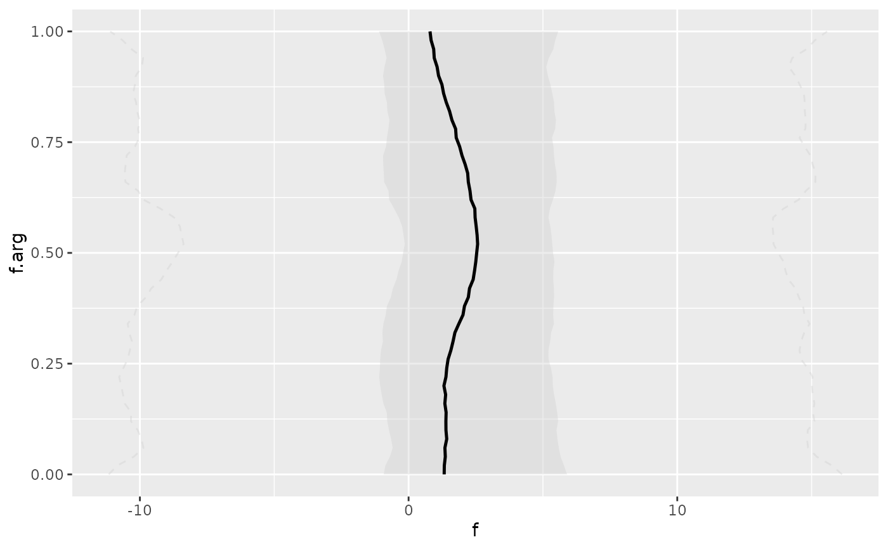

Draw functional boxplots based on functional depth rankings.
Usage
stat_fboxplot(
mapping = NULL,
data = NULL,
geom = "fboxplot",
position = "identity",
...,
orientation = NA,
coef = 1.5,
na.rm = FALSE,
show.legend = NA,
inherit.aes = TRUE,
depth = "MBD",
depth_fn = NULL,
fence_fn = NULL,
central = 0.5,
arg = NULL
)
geom_fboxplot(
mapping = NULL,
data = NULL,
stat = "fboxplot",
position = "identity",
...,
outliers = TRUE,
outlier.colour = NULL,
outlier.color = NULL,
outlier.fill = NULL,
outlier.shape = NULL,
outlier.size = NULL,
outlier.stroke = 0.5,
outlier.alpha = NULL,
whisker.colour = NULL,
whisker.color = NULL,
whisker.linetype = NULL,
whisker.linewidth = NULL,
staple.colour = NULL,
staple.color = NULL,
staple.linetype = NULL,
staple.linewidth = NULL,
median.colour = NULL,
median.color = NULL,
median.linetype = NULL,
median.linewidth = NULL,
box.colour = NULL,
box.color = NULL,
box.linetype = NULL,
box.linewidth = NULL,
notch = FALSE,
notchwidth = 0.5,
staplewidth = 0,
varwidth = FALSE,
na.rm = FALSE,
orientation = NA,
show.legend = NA,
inherit.aes = TRUE,
depth = "MBD",
depth_fn = NULL,
fence_fn = NULL,
central = 0.5,
arg = NULL
)Arguments
- mapping, data, position, show.legend, inherit.aes, na.rm, orientation, ...
Passed on to
ggplot2::layer().- coef
Inflation factor for the central envelope used to define outer fences, defaults to 1.5.
- depth
Character scalar naming the built-in depth measure passed to
tf::tf_depth()whendepth_fnisNULL.- depth_fn
Optional custom depth function. Must return one numeric depth value per function.
- fence_fn
Optional custom fence function. Must return a list with elements
lower,upper, andoutliers.- central
Fraction of deepest curves used to construct the central envelope. Defaults to
0.5.- arg
Optional evaluation grid used for depth calculation, envelopes, and drawing. Defaults to the natural grid of the mapped
tf.- stat, geom
Use the functional boxplot stat/geom.
- outliers
Should outlying curves be drawn?
- outlier.colour, outlier.color, outlier.fill, outlier.shape, outlier.size
Styling parameters for outlier curves.
- outlier.stroke
Accepted for interface compatibility with
ggplot2::geom_boxplot()but ignored because functional outliers are drawn as curves.- outlier.alpha
Alpha used for outlier curves.
- whisker.colour, whisker.color, whisker.linetype, whisker.linewidth
Styling parameters for fence lines.
- staple.colour, staple.color, staple.linetype, staple.linewidth
Accepted for interface compatibility with
ggplot2::geom_boxplot()but currently unused.- median.colour, median.color, median.linetype, median.linewidth
Styling parameters for the median curve.
- box.colour, box.color, box.linetype, box.linewidth
Styling parameters for the central band outline.
- notch, notchwidth, staplewidth, varwidth
Accepted for interface compatibility with
ggplot2::geom_boxplot()but currently unused.
Details
stat_fboxplot() computes a median curve (thick line), a central region
envelope (filled ribbon), functional fences (dashed lines), and optional
outlying curves (defined as "exceeds the fences somewhere", plotted as solid lines)
from a tf column. geom_fboxplot() draws these summaries as a band plus
line layers.
The interface intentionally follows ggplot2::stat_boxplot() and
ggplot2::geom_boxplot() where this is meaningful for functional data.
Use aes(tf = f) to map a tf column. Separate functional boxplots inside a
panel are defined by group, colour/color, or fill; separate panels are
handled through facetting. Note that only color or fill need to be
specified explicitly, as the other will be automatically mapped to the same
variable if not provided.
Examples
# \donttest{
library(ggplot2)
set.seed(1312)
data <- data.frame(id = 1:50, grp = rep(c("A", "B"), each = 25))
data$f <- tf_rgp(50) + 5 * (data$grp == "A")
tf_ggplot(data, aes(tf = f, fill = grp)) + # same as `colour = grp` here!
geom_fboxplot(alpha = 0.3)

tf_ggplot(data, aes(tf = f)) +
geom_fboxplot(orientation = "y")

# }